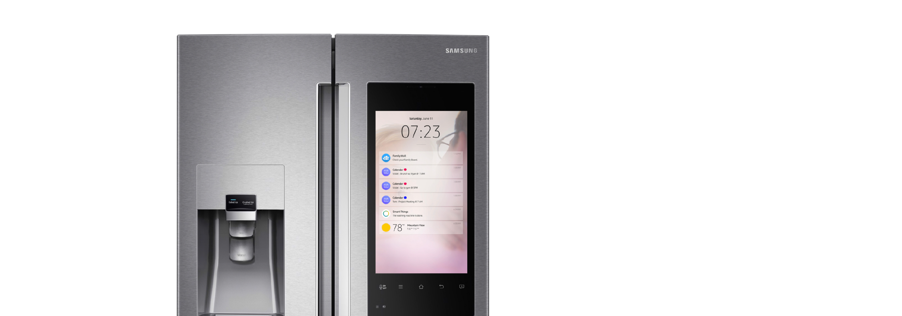

Samsung - Fridge UI
 Design Overview : Objective
The goal is to study the design interaction of the smart fridge and create a a fluid touch design experience that customers can use.
Building a Consistent Design System
In order to have a clean interaction, I first need to build the core ui first. I began by designing the key design patterns that users will need.
• The design will address the consistency of UI elements.
• It needs to represent a unique theme.
• It has to be light for the eyes and easy to use.
• Elegant, Simple, and appearing lightweight to users.
• Explore all possible components and primitives that users can interactive with.
• Building UI patterns that work with most applications.
Fridge UI: Wireframes, Gesture, and Interaction studies
In the early wireframe phase, I had the chance to explore how the display works by working within
the grid and seeing what interaction is best used when designing for the fridge UI. During the exploration process,
I came up with several early studies and solutions.
• Easy to use tiles so users can drag applications.
• App window is able to expand or shrink depending on your gestures.
• Building a structure and grid like design.
• Exploring how applications are used by the square & rectangle system.
• Expanding UI content when touching the app to open.
• Flexible UI that can be stretched anywhere on the Smart Display.
Defining the Grid & UI Specs
The fridge UI is designed in a grid like format. In order for this to be built, I had to design specification for engineers
and work together with them to create a feasible design. It’s important to point out the dimension that makes up the application.
If an app can expand, move, and stretch, those numbers need to be pointed out. Designing the structure as a whole helps me see
how apps live in the Fridge UI ecosystem.

Timer App: Building the App structure
One of the many apps I was assign to design was the timer application. How is time being used and why is it important?
Customers who use this feature often uses it for cooking and prepping for meals ay home. It is one of the apps in a home
scenario with will be used often. In this app, you can set multiple timers and add images. The timer is a circle UI that
slowly counts down and will ping you when it hits zero. This is useful when users are multi-tasking different activities in the kitchen.
I’ve also added some UI specifications for the engineers so they can develop the UI and make it work on the hardware.
Its important to get the fine details and numbers around all UI components that is being used for this app.
What I learned and challenges that I’ve faced:
What I hope to do better is to explore the application and test the interaction of the app much easlier before revising the application.
There may be features that users won’t need and it would be a waste to have certain functions that customers will never use. I learn design
specs can be time consuming, but it is an important process so engineers can build something tangible.
• Every component needs to be measured no matter how small.
• Exploring creative ways to solve a problem despite limitations.
• Always build a consistent grid structure easily line up elements.
• Some existing design patterns, so always build something new.
• A great UX comes from a well built interaction design sytem.
• Incorporate design principles in your work early in the process.